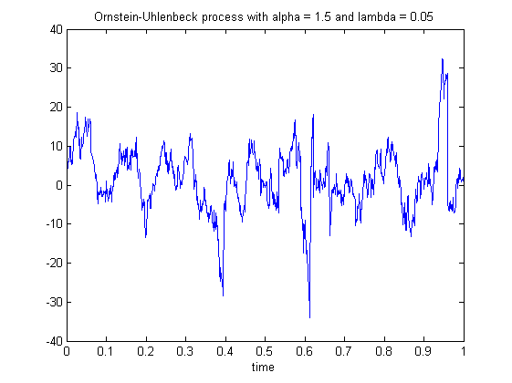
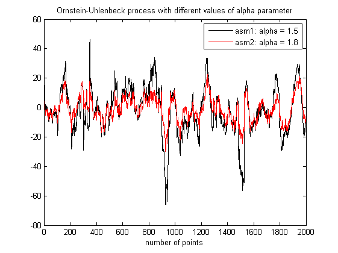

| FRACLAB Functions |
|
Generates an Alpha-Stable Ornstein-Uhlenbeck Process
ASM = asmornhulen(N,ALPHA,LAMBDA,M,m)
ASM = asmornhulen(...,SEED)
ASM = asmornhulen(N,ALPHA,LAMBDA,M,m) Generates the alpha-stable Ornstein-Uhlenbeck process, ASM, using a sample size, N, a stability parameter, ALPHA, an Ornstein-Uhlenbeck parameter, LAMBDA, a kernel cut-off parameter, M and a number of discretization steps, m. The parameters N,M and m are positive integers and this triplet should be chosen so that the value m*(N+M) is a power of 2. ALPHA is a real in (0,2) and LAMBDA is a positive real.
ASM = asmornhulen(...,SEED) Generates the alpha-stable Ornstein-Uhlenbeck process, ASM, with a specific random seed, SEED. This is useful to generate the same path several times or to compare the paths of different ASMs.
N = 1000; A = 1.5; L = 0.05; M = 24; m = 32; t = linspace(0,1,N);
asm = asmornhulen(N,A,L,M,m);
figure; plot(t,asm);
title('Ornstein-Uhlenbeck process with alpha = 1.5 and lambda = 0.05'); xlabel('time')

N = 2000; A1 = 1.5; A2 = 1.8; L = 0.01; M = 48; m = 32;
asm1 = asmornhulen(N,A1,L,M,m,150);
asm2 = asmornhulen(N,A2,L,M,m,150);
figure; plot(asm1,'k'); hold on; plot(asm2,'r');
legend('asm1: alpha = 1.5','asm2: alpha = 1.8','Location','NorthEast');
title('Ornstein-Uhlenbeck process with different values of alpha parameter');
xlabel('number of points');xlim([0 N])

asmlevy, asmlinfrac, msmornhulen
[1] K. Falconer, R. Le Guével, J. Lévy Véhel "Localisable moving average stable and multistable processes", Stochastic Models.
| |
asmlinfrac | boxdim_binaire | |